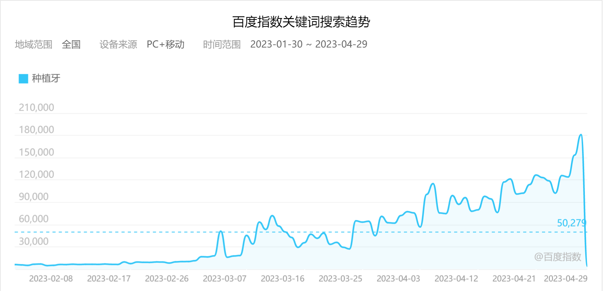
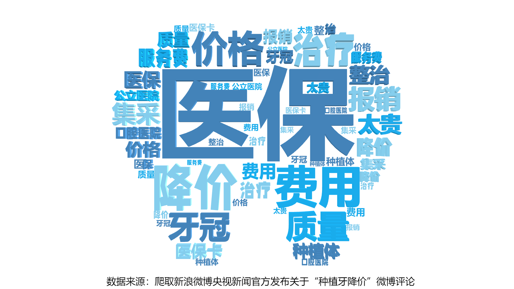

俗话说，“牙疼不是病，疼起来真要命”，你是否有过因牙疼而彻夜难眠的夜晚？是否会因为喝一杯冰水而体会钻心的刺痛？是否会吃着丰富的饭菜却味同嚼蜡？本着“牙疼不是病”的心态，等到牙齿彻底坏死才想起挂牙科“求救”。这次以为能种颗新牙，开始重新大吃四方时，却看见手中的万元账单陷入了沉思……不禁发问“这难道就是口腔刺客？”
近年来，种植牙的问题引起了大众的高度讨论。我们以“种植牙”为关键词，在百度指数，检索了从2023年1月24日至2023年4月23日这九十天内网民在百度的搜索量，发现在2023年3月5日两会召开前后，种植牙话题得到了公众的高度讨论。


其中人们讨论最多和最受人们关注的是种植牙的“医保”“降价”“费用”等关键词
越来越多的人陷入了缺牙种牙的“困境”，当人们想走出缺牙“困境”时，却发现种植牙高昂的价格给他们带来了更为沉重的压力。同时，中国缺牙和选择种植牙的人群也越来越趋于年轻化。种植牙需求的不断增长和种植牙价格的久居不下让人们对此的讨论越来越热烈。
那么究竟“什么是种植牙？”“种植牙究竟多少钱？”“种植牙为何这么贵？”——本文援引公开资料、新闻报道、国家文件介绍了种植牙的定义与构成、人群分析、价格定价、价格高昂原因、国家对种植牙的最新政策，以及对我国口腔医学和种植牙的发展做出展望。